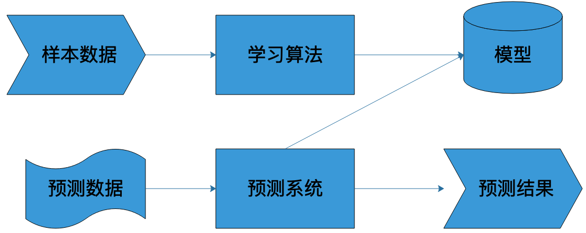

- 00 开篇词 为什么说每个软件工程师都应该懂大数据技术？.md.html
- 01 大数据技术发展史：大数据的前世今生.md.html
- 02 大数据应用发展史：从搜索引擎到人工智能.md.html
- 03 大数据应用领域：数据驱动一切.md.html
- 04 移动计算比移动数据更划算.md.html
- 05 从RAID看垂直伸缩到水平伸缩的演化.md.html
- 06 新技术层出不穷，HDFS依然是存储的王者.md.html
- 07 为什么说MapReduce既是编程模型又是计算框架？.md.html
- 08 MapReduce如何让数据完成一次旅行？.md.html
- 09 为什么我们管Yarn叫作资源调度框架？.md.html
- 10 模块答疑：我们能从Hadoop学到什么？.md.html
- 11 Hive是如何让MapReduce实现SQL操作的？.md.html
- 12 我们并没有觉得MapReduce速度慢，直到Spark出现.md.html
- 13 同样的本质，为何Spark可以更高效？.md.html
- 14 BigTable的开源实现：HBase.md.html
- 15 流式计算的代表：Storm、Flink、Spark Streaming.md.html
- 16 ZooKeeper是如何保证数据一致性的？.md.html
- 17 模块答疑：这么多技术，到底都能用在什么场景里？.md.html
- 18 如何自己开发一个大数据SQL引擎？.md.html
- 19 Spark的性能优化案例分析（上）.md.html
- 20 Spark的性能优化案例分析（下）.md.html
- 21 从阿里内部产品看海量数据处理系统的设计（上）：Doris的立项.md.html
- 22 从阿里内部产品看海量数据处理系统的设计（下）：架构与创新.md.html
- 23 大数据基准测试可以带来什么好处？.md.html
- 24 从大数据性能测试工具Dew看如何快速开发大数据系统.md.html
- 25 模块答疑：我能从大厂的大数据开发实践中学到什么？.md.html
- 26 互联网产品 + 大数据产品 = 大数据平台.md.html
- 27 大数据从哪里来？.md.html
- 28 知名大厂如何搭建大数据平台？.md.html
- 29 盘点可供中小企业参考的商业大数据平台.md.html
- 30 当大数据遇上物联网.md.html
- 31 模块答疑：为什么大数据平台至关重要？.md.html
- 32 互联网运营数据指标与可视化监控.md.html
- 33 一个电商网站订单下降的数据分析案例.md.html
- 34 A_B测试与灰度发布必知必会.md.html
- 35 如何利用大数据成为“增长黑客”？.md.html
- 36 模块答疑：为什么说数据驱动运营？.md.html
- 37 如何对数据进行分类和预测？.md.html
- 38 如何发掘数据之间的关系？.md.html
- 39 如何预测用户的喜好？.md.html
- 40 机器学习的数学原理是什么？.md.html
- 41 从感知机到神经网络算法.md.html
- 42 模块答疑：软件工程师如何进入人工智能领域？.md.html
- 所有的不确定都是机会——智慧写给你的新年寄语.md.html
- 第2季回归丨大数据之后，让我们回归后端.md.html
- 结束语 未来的你，有无限可能.md.html
- 捐赠
40 机器学习的数学原理是什么？
最近几年，人工智能（AI）的风头俨然已经盖过大数据，成为各大互联网公司争相追捧的新“风口”。但当我们谈论人工智能时我们到底在谈什么？人工智能跟机器学习有什么关系？跟大数据又有什么关系？“高大上”的机器学习背后的数学原理是什么？
所谓的人工智能，在技术层面很多时候就是指机器学习，通过选择特定的算法对样本数据进行计算，获得一个计算模型，并利用这个模型，对以前未曾见过的数据进行预测。如果这个预测在一定程度上和事实相符，我们就认为机器像人一样具有某种智能，即人工智能。
这个过程和人类的学习成长非常类似，也是经历一些事情（获得样本数据），进行分析总结（寻找算法），产生经验（产生模型），然后利用经验（模型）指导自己的日常行为。

机器学习的完整过程也是如此，利用样本数据经过算法训练得到模型，这个模型会和预测系统部署在一起，当外部需要预测的数据到达预测系统的时候，预测系统调用模型，就可以立即计算出预测结果。
因此，构建一个机器学习系统，需要有三个关键要素：样本、模型、算法。
样本
样本就是通常我们常说的“训练数据”，包括输入和结果两部分。比如我们要做一个自动化新闻分类的机器学习系统，对于采集的每一篇新闻，能够自动发送到对应新闻分类频道里面，比如体育、军事、财经等。这时候我们就需要批量的新闻和其对应的分类类别作为训练数据。通常随机选取一批现成的新闻素材就可以，但是分类需要人手工进行标注，也就是需要有人阅读每篇新闻，根据其内容打上对应的分类标签。
数学上，样本通常表示为：
\[T = (x\_{1},y\_{1}),(x\_{2},y\_{2}),…,(x\_{n},y\_{n})\]
其中\(x\_{n}\)表示一个输入，比如一篇新闻；\(y\_{n}\)表示一个结果，比如这篇新闻对应的类别。
样本的数量和质量对机器学习的效果至关重要，如果样本量太少，或者样本分布不均衡，对训练出来的模型就有很大的影响。就像一个人一样，见得世面少、读书也少，就更容易产生偏见和刻板印象。
模型
模型就是映射样本输入与样本结果的函数，可能是一个条件概率分布，也可能是一个决策函数。一个具体的机器学习系统所有可能的函数构成了模型的假设空间，数学表示是：
\[F = {f | Y = f(X)}\]
其中X是样本输入，\(Y\)是样本输出，\(f\)就是建立\(X\)和\(Y\)映射关系的函数。所有\(f\)的可能结果构成了模型的假设空间\(F\)。
很多时候\(F\)的函数类型是明确的，需要计算的是函数的参数，比如确定\(f\)函数为一个线性函数，那么f的函数表示就可以写为：
\[y = a\_{1}x + a\_{0}\]
这时候需要计算的就是\(a\_{1}\)和\(a\_{0}\)两个参数的值。这种情况下模型的假设空间的数学表示是：
\[F = \\left\\{f | Y = f\_{\\theta}(X),\\theta\\in R^{n} \\right\\}\]
其中\(\\theta\)为\(f\)函数的参数取值空间，一个\(n\)维欧氏空间，被称作参数空间。
算法
算法就是要从模型的假设空间中寻找一个最优的函数，使得样本空间的输入\(X\)经过该函数的映射得到的\(f(X)\)，和真实的\(Y\)值之间的距离最小。这个最优的函数通常没办法直接计算得到，即没有解析解，需要用数值计算的方法不断迭代求解。因此如何寻找到\(f\)函数的全局最优解，以及使寻找过程尽量高效，就构成了机器学习的算法。
如何保证\(f\)函数或者\(f\)函数的参数空间最接近最优解，就是算法的策略。机器学习中用损失函数来评估模型是否最接近最优解。损失函数用来计算模型预测值与真实值的差距，常用的有0-1损失函数、平方损失函数、绝对损失函数、对数损失函数等。以平方损失函数为例，损失函数如下：
\[L(Y,f(X)) = (Y-f(X))^{2}\]
对于一个给定的样本数据集
\[T= \\left\\{ (x\_{1},y\_{1}),(x\_{2},y\_{2}),…,(x\_{n},y\_{n}) \\right\\}\]
模型\(f(X)\)相对于真实值的平均损失为每个样本的损失函数的求和平均值：
\[R\_{emp}(f)=\\frac{1}{N}\\sum\_{i=1}^{N}{L(y\_{i},f(x\_{i}))}\]
这个值被称作经验风险，如果样本量足够大，那么使经验风险最小的\(f\)函数就是模型的最优解，即求
\[\\min\_{f \\in F}{\\frac{1}{N}\\sum\_{i=1}^{N}{L(y\_{i},f(x\_{i}))}}\]
但是相对于样本空间的可能取值范围，实际中使用的样本量总是有限的，可能会出现使样本经验风险最小的模型\(f\)函数并不能使实际预测值的损失函数最小，这种情况被称作过拟合，即一味追求经验风险最小，而使模型\(f\)函数变得过于复杂，偏离了最优解。这种情况下，需要引入结构风险以防止过拟合。结构风险表示为：
\[R\_{srm}(f)=\\frac{1}{N}\\sum\_{i=1}^{N}{L(y\_{i},f(x\_{i}))+\\lambda J(f)}\]
在经验风险的基础上加上\(\\lambda J(f)\)，其中\(J(f)\)表示模型\(f\)的复杂度，模型越复杂，\(J(f)\)越大。要使结构风险最小，就要使经验风险和模型复杂度同时小。求解模型最优解就变成求解结构风险最小值：
\[\\min\_{f \\in F}{\\frac{1}{N}\\sum\_{i=1}^{N}{L(y\_{i},f(x\_{i}))+\\lambda J(f)}}\]
小结
今天我所讲的就是机器学习的数学原理：给定模型类型，也就是给定函数类型的情况下，如何寻找使结构风险最小的函数表达式。由于函数类型已经给定，实际上就是求函数的参数。各种有样本的机器学习算法基本上都是在各种模型的假设空间上求解结构风险最小值的过程，理解了这一点也就理解了各种机器学习算法的推导过程。
由于计算机没有办法直接通过解析计算得到需要的函数表达式，因此必须使用数值计算的方式求函数表达式，也就是将大量的样本数据带入数值计算算法迭代计算函数的参数，具体数值计算方法我在专栏下期会举例说明。一个机器学习模型的参数可能有数百万，训练的样本数据则会更多，因此机器学习通常依赖大数据技术进行模型训练，而机器学习及其高阶形态的神经网络、深度学习则是实现人工智能的主要手段。
对于理解机器学习背后的数学原理，我给你讲个我自己的故事。我大学专业是工业自动化，老实说我学得也不好。应该说从第一门专业基础课《自动控制原理》开始就蒙掉了，不知道在干什么，微分方程、矩阵运算和自动控制有什么关系，好像完全搞不明白。就这样稀里糊涂上了四年，在及格线边缘挣扎了四年，毕业的时候感觉大学白上了四年，特别郁闷，觉得人生太失败了。
工作多年以后，有一次公司出去团建，有个同事带了一本《星际航行概论》在路上看。起初我以为是一本科幻小说，拿过来随手翻了翻，发现居然是一本技术书。然后就非常好奇，认真看了两页，正好是关于自动控制的部分。这本书将自动控制的基本方法、理论基础、应用场景讲得非常清楚，微分方程和矩阵运算的作用也讲得很透彻。当时看的时候，有一种颤栗的感觉，像是醍醐灌顶一样一种穿透感。当时想，如果我大学的时候能看到这两页书，也许这四年就不一样了。
这个故事目的是什么呢？我看过一些关于机器学习的书，上来就讲偏微分方程，我不知道别的读者是什么感受，反正我感觉又回到了被大学上的那几年。为什么机器学习要解偏微分方程？机器学习跟偏微分方程究竟是个什么关系？
事实上，关系很简单。机器学习要从假设空间寻找最优函数，而最优函数就是使样本数据的函数值和真实值距离最小的那个函数。给定函数模型，求最优函数就是求函数的参数值。给定不同参数，得到不同函数值和真实值的距离，这个距离就是损失，损失函数是关于模型参数的函数，距离越小，损失越小。最小损失值对应的函数参数就是最优函数。
而我们知道，数学上求极小值就是求一阶导数，计算每个参数的一阶导数为零的偏微分方程组，就可以算出最优函数的参数值。这就是为什么机器学习要计算偏微分方程的原因。
当时我特地关注了下《星际航行概论》这本书的作者，发现是钱学森。又一次被震撼，大师真的可以无所不能啊，当时就想穿越时空给钱老献上膝盖啊！
顺便说一句，当时带这本书在路上看的同事是阿里巴巴的温少，是JSON解析器fastjson和数据库连接池Druid的作者，这两个作品在国内的开源产品一直排名Top10，做Java开发同学应该都知道。我见过很多技术非常厉害的人都涉猎很广，我觉得他们无论去做哪一行，应该都是高手。
思考题
大数据、机器学习、人工智能三者的关系究竟是什么？
欢迎你点击“请朋友读”，把今天的文章分享给好友。也欢迎你写下自己的思考或疑问，与我和其他同学一起讨论。
© 2019 - 2023 Liangliang Lee. Powered by gin and hexo-theme-book.